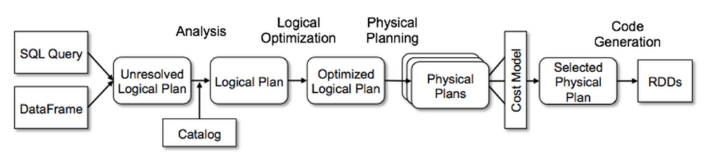

1 Introduction
1.1 Using Spark for exploratory data analysis
1.1.1 What is Spark?
From its humble beginnings in the AMPLab at U.C. Berkeley in 2009, Apache Spark has become one of the key big data distributed processing frameworks in the world. Spark can be deployed in various ways, provides native bindings for the Java, Scala, Python, and R programming languages, and supports SQL, streaming data, machine learning, and graph processing. You’ll find it used by banks, telecommunications companies, games companies, governments, and all major tech giants such as Apple, Facebook, IBM, and Microsoft. ref
Databricks provides an excellent overview as well.
1.1.2 Rules of thumb for Spark
We are learning to use Spark as Data Scientists or Analysts that need tools for exploring and analyzing data that pushes the boundaries of our local memory. As we explore this space, we will need to keep in mind a few rules of thumb that should guide our use of Spark.
1.1.2.1 The Spark APIs let you use your language of preference
You can use Java, Scala, Python, or R to access Spark. Like Goldilocks and the Three Bears, we want the language that is not ‘too hot’ or ‘too cold’ for data science use. Java is a bit too verbose for day-to-day data science work. Scala is fast but still a little verbose. Python is a little slower but ingrained in the data science community, and R is less easy to implement in a production environment.
- pyspark (just right): The pyspark package looks to be the ‘just the right amount’ of the Spark APIs.
- sparkR (a little cold): Apache has developed an R package that is the official R connection to Spark.
- sparklyr (RStudio’s warm-up): If you are experienced with the Tidyverse, then RStudio’s sparklyr could pull you away from pyspark.
You can read a comparison of sparkR and sparklyr here.
1.1.2.2 Use DataFrames (ignore RDDs)
For day-to-day data science use, DataFrames are the option you should choose.
- Spark has built a framework to optimize Resilient Distributed Dataset (RDD) use when we program with
DataFramemethods. - Spark internally stores
DataFrames in a binary format, so there is no need to serialize and deserialize data as it moves over the cluster.
Databricks provides a Deep Dive into Spark SQL’s Catalyst Optimizer and A Tale of Three Apache Spark APIs: RDDs vs. DataFrames and Datasets to help you understand more depth on the relationship between DataFrames.
We pulled the bullets and image below from the Databricks articles.
- If you want unification and simplification of APIs across Spark Libraries, use DataFrame or Dataset.
- If you are an R user, use DataFrames.
- If you are a Python user, use DataFrames and resort back to RDDs if you need more control.

1.1.2.3 Write and Read serialized data formats
The Apache Parquet format is optimal for most data science applications. It is a serialized columnar format that provides speed and size benefits for big data applications. The following table compares the savings and the speedup obtained by converting data into Parquet from CSV.
| Dataset | Size on Amazon S3 | Query Run Time | Data Scanned | Cost |
|---|---|---|---|---|
| Data stored as CSV files | 1 TB | 236 seconds | 1.15 TB | $5.75 |
| Data stored in Apache Parquet Format | 130 GB | 6.78 seconds | 2.51 GB | $0.01 |
| Savings | 87% less when using Parquet | 34x faster | 99% less data scanned | 99.7% savings |
You could use Avro with Spark as well. It is stored in rows, much like a .csv file, but is serialized.
1.2 DataBricks
1.2.2 The elevator pitches
Check out these branded videos.
Here is a bit more nerdy DS/CS pitch from their website
With origins in academia and the open-source community, Databricks was founded in 2013 by the original creators of Apache Spark™, Delta Lake, and MLflow. As the world’s first and only lakehouse platform in the cloud, Databricks combines the best of data warehouses and data lakes to offer an open and unified platform for data and AI.
Introduction to Databricks Unified Data Platform: 5 min demo
1.2.3 Databricks Community Edition
The community edition provides free access to the Databricks environment to see their vision of jupyter notebooks and to work with a Spark environment. The users do not incur any costs while using Databricks.
Read more about the limitations of Community Edition at this FAQ.
1.2.3.1 Community Edition Setup
- Create a community account on Databricks
- Login into the Databricks community edition portal
- Click the compute icon on the left (
 )
) - Name your cluster
- Create your cluster and then navigate to the libraries tab to install our needed Python packages (for example
gql,plotnine,altair). Pandas is already installed.
1.2.4 What is the difference between the Databricks Community Edition and the full Databricks Platform?
With the Databricks Community Edition, the users will have access to 15GB clusters, a cluster manager and the notebook environment to prototype simple applications, and JDBC / ODBC integrations for BI analysis. The Databricks Community Edition access is not time-limited and users will not incur AWS costs for their cluster usage.
The full Databricks platform offers production-grade functionality, such as an unlimited number of clusters that easily scale up or down, a job launcher, collaboration, advanced security controls, and expert support. It helps users process data at scale, or build Apache Spark applications in a team setting.